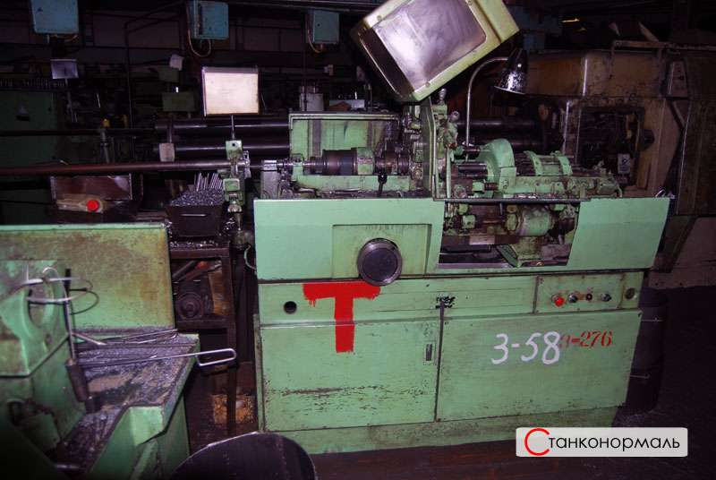
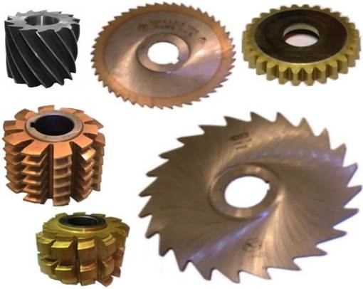

ОАО «Станконормаль" - филиал московского производственного объединения


Компания ОТКРЫТОЕ АКЦИОНЕРНОЕ ОБЩЕСТВО "БЕЛЬСКИЙ ЗАВОД СТАНОЧНЫХ
НОРМАЛЕЙ" изготавливает метизную продукцию (болты, винты, шпильки,
заклепки, гайки, шайбы и прочие детали) на собственном оборудовании.
Является филиалом московского завода.